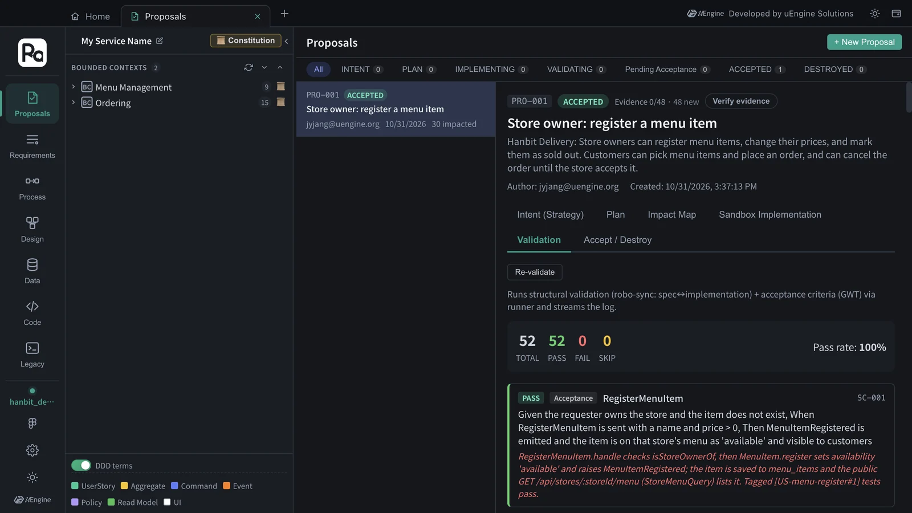
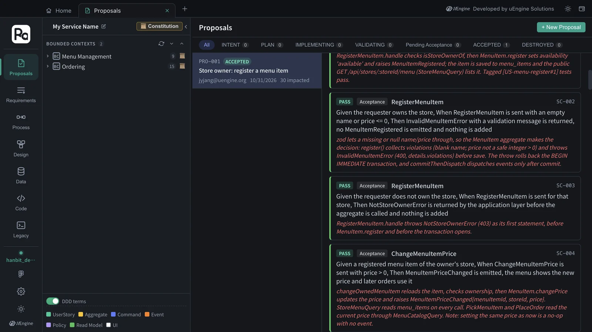
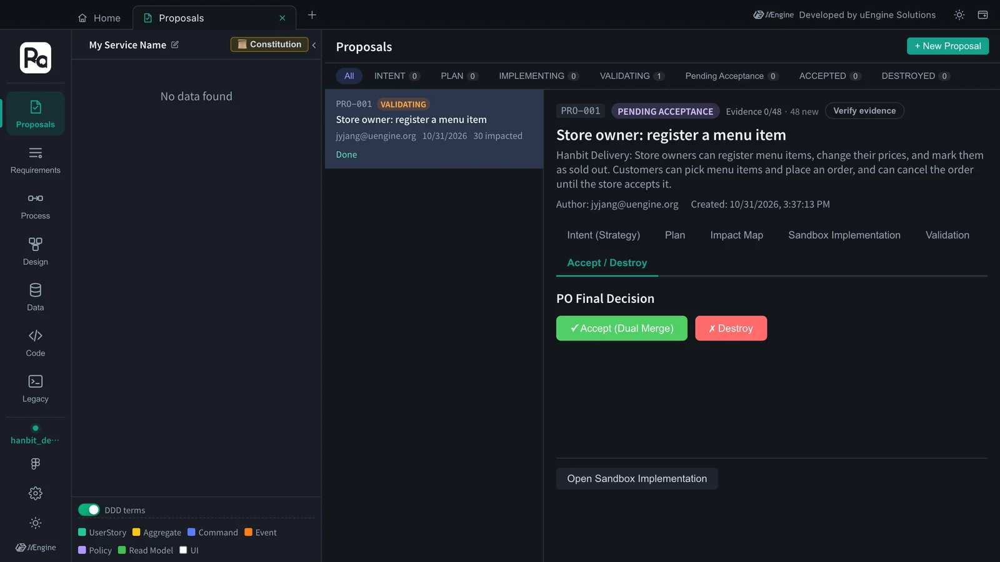
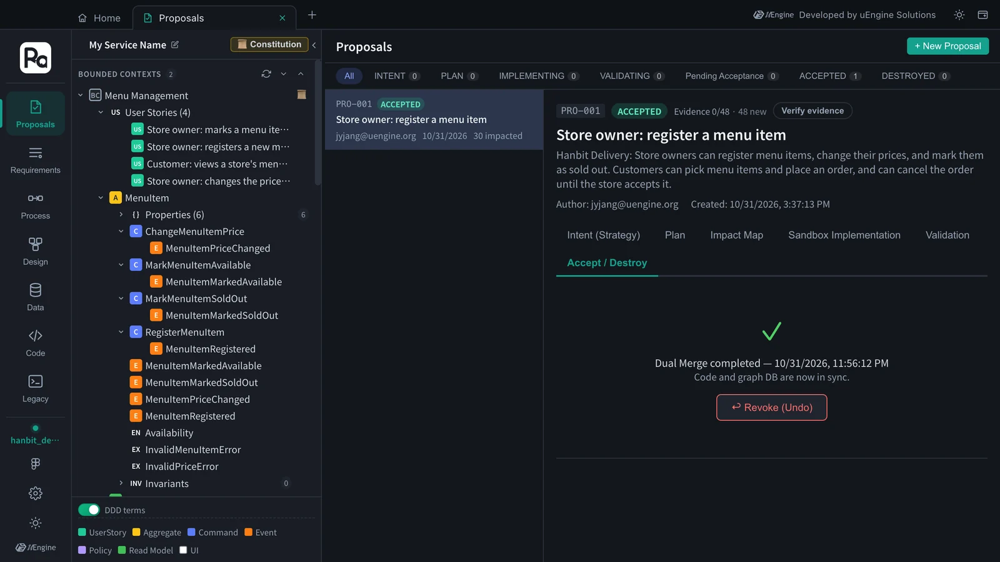

When implementation is finished, “Done → Verify” checks the sandbox code against the design. Structural validation (robo-sync: are the design's aggregates · commands · events in the code?) and acceptance criteria (do the Given · When · Then hold?) are reviewed together, and if they pass, “Accept (Dual Merge)” merges the code and the design graph into the main line at once. In this tutorial all 52 checks passed, with 0 failures and 0 SKIPs, and validation through acceptance took about 8 minutes.
Why validate#
The AI ticking every item on the task list is no guarantee that the code was built as designed. Validation looks at two things.
- Structural validation — whether the tactical design's (Chapter 5) aggregates · fields · commands · events are in the code. The
robo-syncextractor pulls them out of the code and matches them against the design. - Acceptance criteria — for each Given · When · Then in the strategic design (Chapter 3), it reads the code and tests to judge whether it holds, and attaches evidence (the code that enforces it, the tests that passed).
Hands-on 1 — Run validation#
- When the progress bar reaches 18/18, Done → Verify appears in the Sandbox Implementation section. Click it.
- You move to the Validation section and the log streams (“Loaded 24 acceptance criteria + structural targets. Comparing with the robo-sync extractor…”). To stop midway, click Stop.
- In this tutorial, the results came out after about 7½ minutes.

Hands-on 2 — Read the results#
| Kind | Count | PASS | FAIL | SKIP |
|---|---|---|---|---|
| Acceptance criteria | 24 | 24 | 0 | 0 |
| Structural validation | 28 | 28 | 0 | 0 |
| Total | 52 | 52 | 0 | 0 |
The 28 structural checks are the tactical design's elements: 3 aggregates, 10 commands, 10 events and 5 read models. The pass rate is PASS ÷ Total = 52 ÷ 52 = 100%.
Each card shows the verdict, the kind (Acceptance · Structural), the target (e.g. RegisterMenuItem), the scenario number (SC-001) and the evidence. For example, SC-002 says “registering a menu item with an empty name or a price of 0 or less returns InvalidMenuItemError and adds nothing”. Its evidence is that the MenuItem aggregate's register() collects the violations (blank name, price not a whole number above 0) and throws InvalidMenuItemError (400) before anything is saved, and that the throw rolls back the transaction.

What SKIP means#
There were no SKIPs this time. A SKIP means a check couldn't be judged automatically; it isn't a failure. The usual cause is a command with no type of its own: if a command exists only as service method arguments and a zod schema, the extractor can't pull out its input fields. The validator may read the code and note “the inputs match the spec”, but since that isn't an automatic match, it records SKIP rather than PASS.
In this run every command had its own input type, such as ChangeMenuItemPriceCommand { menuItemId, price }, so all 10 commands were matched field by field. (The extractor reads only the first exported class in a file, so the validator ran it on copies of each declaration — command inputs, event payloads, value objects — to compare them all.)
To keep SKIPs at zero
Keep commands as types, as in this run (RegisterMenuItemCommand, ChangeMenuItemPriceCommand, …), so the extractor can read them. If you want this as a team rule, write it into the constitution (Chapter 4) or the implementation skill (Chapter 10).
Hands-on 3 — Accept (Dual Merge)#
- Open the Accept / Destroy section. Under “PO Final Decision” there are ✓ Accept (Dual Merge) and ✗ Destroy.
- If there are failures (FAIL), you must tick “I acknowledge the failures and will proceed with Accept” before Accept can be clicked. There were no failures this time, so it was enabled right away.
- Click Accept (Dual Merge). “Dual Merge completed” and “Code and graph DB are now in sync.” appear, and the status becomes ACCEPTED.


Dual Merge merges two things at once.
- Code — merges the
proposal/PRO-001branch into the main branch and removes the sandbox worktree. - Design — writes the proposal's strategic and tactical design into the project graph. The two BOUNDED CONTEXTS (Ordering · Menu Management) that appeared on the left are the result. You tour this design in Chapter 8.
If you need to undo it, click ↩ Revoke (Undo). You choose one of two options.
- Graph only — reverts only the changes to the design graph and leaves the code on the main branch.
- Graph + Code — reverts the graph and also runs
git reverton the Accept merge commit.
To throw the proposal away instead of accepting it, click Destroy instead of Accept. It removes the sandbox worktree and sets the status to DESTROYED. Because this happens before acceptance, the design graph was never changed, and the proposal's diff history is kept. A proposal that is already ACCEPTED can't be destroyed (use Revoke).
Run it yourself#
Once accepted, the code is on the main branch, so you can run it yourself (Node.js 22 or later). In this tutorial's result, all 296 tests passed: 274 in the backend and 22 in the frontend.
cd ~/robo-lite-src/projects/hanbit-delivery-en # the code folder you chose on Home
npm install
npm test # backend: Test Files 21 passed (21) · Tests 274 passed (274)
# frontend: Test Files 3 passed (3) · Tests 22 passed (22)
What to check#
- The validation result shows Total · PASS · FAIL · SKIP and the pass rate.
- You read the evidence on a card, and can say what a SKIP would mean and how command types prevent it.
- After Accept (Dual Merge), the status is ACCEPTED and bounded contexts have appeared on the left.
Quiz#
- What do structural validation and acceptance-criteria validation each look at?
- Suppose a run had 5 SKIPs and no failures. They aren't failures, so why isn't the pass rate 100%?
- There is one FAIL, but you want to accept anyway. How?
Answers
- Structural validation uses the robo-sync extractor to check that the tactical design's elements (aggregates · fields · commands · events) are in the code. Acceptance-criteria validation judges, with evidence, whether each Given · When · Then is upheld by the code and tests.
- The pass rate is PASS ÷ Total, so SKIPs that couldn't be judged automatically are in the denominator too — with this run's 52 checks, 47 ÷ 52 ≈ 90%. Making commands into types lets the extractor read them and reduces SKIPs.
- In the Accept / Destroy section, tick “I acknowledge the failures and will proceed with Accept”, and Accept becomes clickable. A record that you merged knowing about the failure is kept, so it's best to fix it in a later proposal.